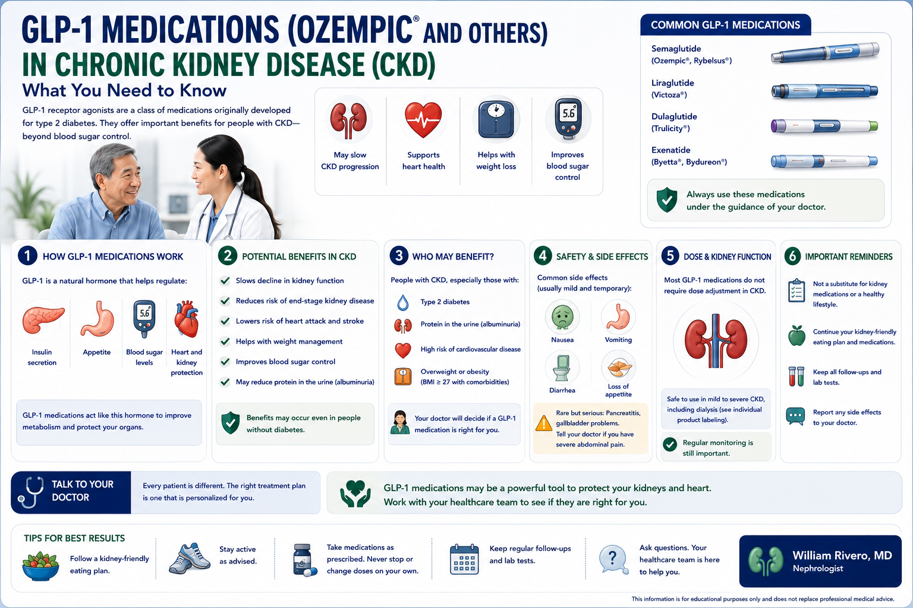

What Are GLP-1 Receptor Agonists? Ano ang mga GLP-1 Receptor Agonist? Unsa ang mga GLP-1 Receptor Agonist? Nanung Deng GLP-1 Receptor Agonist?

GLP-1 (glucagon-like peptide-1) receptor agonists are medications that mimic a natural gut hormone. When you eat, your gut releases GLP-1, which signals the pancreas to release insulin, blocks the hormone that raises blood sugar (glucagon), slows digestion, and reduces appetite. GLP-1 drugs — like Ozempic (semaglutide) and Victoza (liraglutide) — do all of this artificially. Originally developed purely for diabetes, they have since revealed kidney-protective, heart-protective, and weight-loss effects that have made them one of the most important drug classes in modern medicine. Ang mga GLP-1 receptor agonist ay mga gamot na ginagaya ang isang natural na hormone ng bituka. Kapag kumain ka, ang iyong bituka ay naglalabas ng GLP-1, na nagsenyas sa pancreas na maglabas ng insulin, nagharang sa hormone na nagtataas ng asukal sa dugo, nagpapabagal ng pagtunaw, at nagbabawas ng gana sa pagkain. Ang mga GLP-1 na gamot ay ginagawa ang lahat ng ito nang artipisyal. Ang mga GLP-1 receptor agonist mga tambal nga nagsundog sa natural nga hormone sa tinai. Kon mokaon ka, ang imong tinai nagpagawas sa GLP-1, nga nagsenyas sa pancreas nga magpagawas sa insulin, nagbabag sa hormone nga nagtaas sa asukal sa dugo, nagpabagal sa pagtunaw, ug nagkunhod sa ganahan sa pagkaon. Ang mga GLP-1 nga tambal gibuhat kining tanan sa artipisyal. Deng GLP-1 receptor agonist deng gamut a ginagaya ning natural a hormone ning bituka. Kung kumain ka, ing bituka mo naglalabas ning GLP-1, na nagsenyas king pancreas na maglabas ning insulin, nagharang king hormone a nagtataas ning asukal king dala, nagpapabagal ning pagtunaw, at nagbabawas ning gana king pagkain. Deng GLP-1 a gamut ginagawa iting sablang iti nang artipisyal.
Semaglutide
The most studied GLP-1 drug for kidney protection. Once-weekly subcutaneous injection (0.5mg → 1mg). Now FDA-approved for CKD + T2DM since January 2025.Ang pinaka-pinag-aralan na GLP-1 na gamot para sa proteksyon ng bato. Isang beses sa isang linggo na subcutaneous injection. Inaaprubahan ng FDA para sa CKD + T2DM mula Enero 2025.Ang pinaka-gistudyohan nga GLP-1 nga tambal alang sa proteksyon sa kidney. Kausa sa usa ka semana nga subcutaneous injection. FDA-approved alang sa CKD + T2DM sukad Enero 2025.Ing pinaka-pinag-aralan a GLP-1 a gamut para king proteksyon ning batu. Metung beses king metung a linggu a subcutaneous injection. FDA-approved para king CKD + T2DM mula Enero 2025.
FLOW Trial 2025 ✓Liraglutide
Daily injection. First GLP-1 to show cardiovascular benefit in CKD patients. Kidney protection shown in LEADER trial (2016). Safe down to eGFR 15.Araw-araw na injection. Unang GLP-1 na nagpakita ng benepisyo sa cardiovascular sa mga pasyente ng CKD. Ang proteksyon ng bato ay ipinakita sa LEADER trial.Adlaw-adlaw nga injection. Unang GLP-1 nga nagpakita sa cardiovascular nga benepisyo sa mga pasyente sa CKD. Proteksyon sa kidney gipakita sa LEADER trial.Araw-araw a injection. Unang GLP-1 a nagpakita ning cardiovascular a benepisyo king deng pasyente ning CKD. Proteksyon ning batu ipinakita king LEADER trial.
LEADER Trial 2016Dulaglutide
Weekly injection. AWARD-7 trial showed albuminuria reduction and slowed eGFR decline in CKD patients with T2DM. No dose adjustment needed in CKD.Lingguhang injection. Ang AWARD-7 trial ay nagpakita ng pagbabawas ng albuminuria at pagpapabagal ng pagbaba ng eGFR sa mga pasyente ng CKD na may T2DM.Lingguhang injection. Ang AWARD-7 trial nagpakita sa pagkunhod sa albuminuria ug pagpabagal sa paghulog sa eGFR sa mga pasyente sa CKD nga adunay T2DM.Lingguhang injection. Ing AWARD-7 trial nagpakita ning pagbabawas ning albuminuria at pagpapabagal ning pagbaba ning eGFR king deng pasyente ning CKD a maki T2DM.
AWARD-7 TrialThe Landmark FDA Approval: What the FLOW Trial Proved Ang Mahalagang Pag-apruba ng FDA: Ano ang Napatunayan ng FLOW Trial Ang Landmark nga Pag-apruba sa FDA: Unsa ang Napatunayan sa FLOW Trial Ing Mahalagang Pag-apruba ning FDA: Nanung Napatunayan ning FLOW Trial
On January 28, 2025, the FDA approved Ozempic® (semaglutide) for a new indication: reducing the risk of kidney disease progression, kidney failure, and cardiovascular death in adults with type 2 diabetes and CKD. This was based on the landmark FLOW trial — 3,533 patients across 28 countries, the largest kidney outcomes trial ever conducted with a GLP-1 drug. Noong Enero 28, 2025, inaaprubahan ng FDA ang Ozempic® (semaglutide) para sa bagong indikasyon: pagbabawas ng panganib ng pag-unlad ng sakit sa bato, pagpalya ng bato, at pagkamatay sa cardiovascular sa mga may type 2 diabetes at CKD. Ito ay batay sa landmark FLOW trial — 3,533 pasyente sa 28 bansa. Niadtong Enero 28, 2025, giaprubahan sa FDA ang Ozempic® (semaglutide) alang sa bag-ong indikasyon: pagkunhod sa risgo sa pag-abante sa sakit sa kidney, pagpalya sa kidney, ug kamatayon sa cardiovascular sa mga adunay type 2 diabetes ug CKD. Kini gibase sa landmark nga FLOW trial — 3,533 ka pasyente sa 28 ka nasud. King Enero 28, 2025, inaprubahan ning FDA ing Ozempic® (semaglutide) para king bagong indikasyon: pagbabawas ning panganib ning pag-unlad ning sakit king batu, pagpalya ning batu, at pagkamatay king cardiovascular king deng maki type 2 diabetes at CKD. Iti batay king landmark a FLOW trial — 3,533 a pasyente king 28 a bansa.
Important: The FLOW trial was stopped earlyMahalaga: Ang FLOW trial ay pinahinto nang maagaImportante: Ang FLOW trial giundang nang sayoMahalaga: Ing FLOW trial pinahinto nang maaga
The independent safety monitoring board stopped the FLOW trial early — after a median follow-up of only 3.4 years — because semaglutide's benefits were so clear that continuing with a placebo group was considered unethical. Early stopping of a trial due to benefit is the strongest possible signal of efficacy.Pinahinto ng independent safety monitoring board ang FLOW trial nang maaga — pagkatapos ng median na 3.4 taon ng follow-up — dahil ang mga benepisyo ng semaglutide ay napakaalinaw na ang patuloy na pagpapanatili ng grupo ng placebo ay itinuturing na hindi etikal.Giundang sa independent safety monitoring board ang FLOW trial nang sayo — pagkahuman sa median nga 3.4 ka tuig nga follow-up — tungod kay ang mga benepisyo sa semaglutide hilabihan ka klaro nga ang pagpadayon sa grupo sa placebo giisip nga dili etikal.Pinahinto ning independent safety monitoring board ing FLOW trial nang maaga — pagkatapos ning median a 3.4 taon ning follow-up — dahil deng benepisyo ning semaglutide napaka-alinaw na ing patuloy a pagpapanatili ning grupo ning placebo itinuturing a hindi etikal.
How Does Semaglutide Protect the Kidneys? Paano Pinoprotektahan ng Semaglutide ang mga Bato? Giunsa Pagpanalipod sa Semaglutide ang mga Kidney? Panung Pinoprotektahan ning Semaglutide Deng Batu?
GLP-1 receptors are found not just in the pancreas, but also in the kidneys, heart, brain, and gut. The kidney-protective effects of semaglutide work through at least four independent pathways — which is why the benefit is seen even beyond what blood sugar control alone would predict. Ang mga GLP-1 receptor ay matatagpuan hindi lamang sa pancreas, kundi pati na rin sa mga bato, puso, utak, at bituka. Ang mga kidney-protective na epekto ng semaglutide ay gumagana sa pamamagitan ng hindi bababa sa apat na independyenteng landas. Ang mga GLP-1 receptor nakit-an dili lamang sa pancreas, kondili usab sa mga kidney, kasingkasing, utok, ug tinai. Ang kidney-protective nga mga epekto sa semaglutide molihok pinaagi sa labing menos upat ka independyenteng agianan. Deng GLP-1 receptor matatagpuan hindi lamang king pancreas, kundi pati na rin king deng batu, puso, utak, at bituka. Deng kidney-protective a epekto ning semaglutide gumagana sa pamamagitan ning hindi bababa sa apat a independyenteng landas.
Blood sugar control → less glucose-induced kidney damageKontrol ng asukal sa dugo → mas kaunting pinsala sa bato na dulot ng glucoseKontrol sa asukal sa dugo → mas gamay nga kadaot sa kidney nga gibuhat sa glucoseKontrol ning asukal king dala → mas kaunting pinsala king batu a dulot ning glucose
Better glycemic control reduces the toxic glycation of kidney proteins and decreases hyperfiltration — the process where high blood sugar forces the kidney to overwork, eventually burning it out.Ang mas mahusay na kontrol ng glucose ay nagbabawas ng nakakalason na glycation ng mga protina ng bato at nagbabawas ng hyperfiltration.Mas maayong kontrol sa glucose nagkunhod sa toxic na glycation sa mga protina sa kidney ug nagkunhod sa hyperfiltration.Mas maayus a kontrol ning glucose nagbabawas ning toxic a glycation ning deng protina ning batu at nagbabawas ning hyperfiltration.
Natriuresis → lower blood pressure, less kidney stressNatriuresis → mas mababang presyon ng dugo, mas kaunting stress sa batoNatriuresis → mas ubos nga presyon sa dugo, mas gamay nga stress sa kidneyNatriuresis → mas mababang presyon ning dala, mas kaunting stress king batu
GLP-1 receptors in the kidney tubules increase sodium excretion (natriuresis). Less sodium retained = lower blood pressure = less mechanical stress on the glomeruli. This is independent of blood sugar control.Ang mga GLP-1 receptor sa mga tubules ng bato ay nagpapataas ng sodium excretion. Mas kaunting sodium na natitira = mas mababang presyon ng dugo = mas kaunting mechanical stress sa mga glomeruli.Ang mga GLP-1 receptor sa mga tubules sa kidney nagpataas sa sodium excretion. Mas gamay nga sodium nga natipigan = mas ubos nga presyon sa dugo = mas gamay nga mechanical stress sa mga glomeruli.Deng GLP-1 receptor king deng tubule ning batu nagpapataas ning sodium excretion. Mas kaunting sodium a natitira = mas mababang presyon ning dala = mas kaunting mechanical stress king deng glomeruli.
Anti-inflammatory effect → less kidney scarringAnti-inflammatory na epekto → mas kaunting pag-ukit ng batoAnti-inflammatory nga epekto → mas gamay nga pag-ukit sa kidneyAnti-inflammatory a epekto → mas kaunting pag-ukit ning batu
Semaglutide reduces inflammatory cytokines in kidney tissue — particularly TGF-β and NF-κB pathways that drive fibrosis (irreversible kidney scarring). Less fibrosis = slower progression.Ang semaglutide ay nagbabawas ng mga inflammatory cytokines sa tissue ng bato — lalo na ang mga landas ng TGF-β at NF-κB na nagpapatakbo ng fibrosis. Mas kaunting fibrosis = mas mabagal na pag-unlad.Ang semaglutide nagkunhod sa mga inflammatory cytokines sa tissue sa kidney — ilabi na ang mga agianan sa TGF-β ug NF-κB nga nagpadagan sa fibrosis. Mas gamay nga fibrosis = mas bagal nga pag-abante.Ing semaglutide nagbabawas ning deng inflammatory cytokines king tissue ning batu — lalu na deng landas ning TGF-β at NF-κB a nagpapatakbo ning fibrosis. Mas kaunting fibrosis = mas mabagal a pag-unlad.
Weight loss → less obesity-driven kidney hyperfiltrationPagbaba ng timbang → mas kaunting hyperfiltration ng bato na dulot ng obesityPagkunhod sa timbang → mas gamay nga hyperfiltration sa kidney nga gibuhat sa obesityPagbaba ning timbang → mas kaunting hyperfiltration ning batu a dulot ning obesity
Obesity independently causes kidneys to hyperfiltrate (overwork). Semaglutide causes significant weight loss (typically 10–15% of body weight) — directly reducing the metabolic load on the kidneys. This effect is separate from its blood sugar effects.Ang obesity ay nagdudulot ng hyperfiltration ng mga bato nang independyente. Ang semaglutide ay nagdudulot ng makabuluhang pagbaba ng timbang (karaniwang 10–15% ng timbang ng katawan) — direktang nagbabawas ng metabolic na pasan sa mga bato.Ang obesity nagdala sa mga kidney nga hyperfiltrate (sobra ka trabaho) sa independyenteng paagi. Ang semaglutide nagdala sa makasabot nga pagkunhod sa timbang (kasagaran 10–15% sa timbang sa lawas) — direkta nagkunhod sa metabolic nga pasan sa mga kidney.Ing obesity nagdudulot ning hyperfiltration deng batu nang independyente. Ing semaglutide nagdudulot ning makabuluhang pagbaba ning timbang (karaniwang 10–15% ning timbang ning katawan) — direktang nagbabawas ning metabolic a pasan king deng batu.
Who Should Take Semaglutide for CKD? Sino ang Dapat Uminom ng Semaglutide para sa CKD? Kinsa ang Kinahanglan Muwag sa Semaglutide alang sa CKD? Sino ing Dapat Uminom ning Semaglutide para king CKD?
| CriteriaPamantayanSumbananPamantayan | DetailsMga DetalyeMga DetalyeDeng Detalye |
|---|---|
| ✅ Must have Type 2 Diabetes✅ Dapat may Type 2 Diabetes✅ Kinahanglan adunay Type 2 Diabetes✅ Dapat maki Type 2 Diabetes | FDA approval is specifically for T2DM + CKD combination. The drug is NOT currently FDA-approved for CKD without diabetes, though research is ongoing.Ang pag-apruba ng FDA ay espesipiko para sa kombinasyon ng T2DM + CKD. Ang gamot ay HINDI kasalukuyang aprubado ng FDA para sa CKD na walang diabetes.Ang pag-apruba sa FDA espesipiko alang sa kombinasyon sa T2DM + CKD. Ang tambal DILI kasalukuyang FDA-approved alang sa CKD nga walay diabetes.Ing pag-apruba ning FDA espesipiko para king kombinasyon ning T2DM + CKD. Ing gamut HINDI kasalukuyang FDA-approved para king CKD a walang diabetes. |
| ✅ CKD Stage 2–4 (eGFR 25–75)✅ CKD Yugto 2–4 (eGFR 25–75)✅ CKD Yugto 2–4 (eGFR 25–75)✅ CKD Yugto 2–4 (eGFR 25–75) | FLOW trial enrolled patients with eGFR 25–75 mL/min/1.73m² and significant proteinuria (UACR >100 mg/g). Most benefit seen in those with higher baseline proteinuria.Ang FLOW trial ay nagtanggap ng mga pasyente na may eGFR 25–75 at makabuluhang proteinuria (UACR >100 mg/g).Ang FLOW trial nagdawat sa mga pasyente nga adunay eGFR 25–75 ug makasabot nga proteinuria (UACR >100 mg/g).Ing FLOW trial nagtanggap ning deng pasyente a maki eGFR 25–75 at makabuluhang proteinuria (UACR >100 mg/g). |
| ✅ Already on standard care✅ Kasalukuyan na nasa standard care✅ Naa na sa standard care✅ Kasalukuyan nang nasa standard care | Semaglutide is used IN ADDITION to — not instead of — ACE inhibitors/ARBs, SGLT2 inhibitors, blood pressure control, and diet. It is an add-on therapy.Ang semaglutide ay ginagamit BILANG KARAGDAGAN SA — hindi bilang kapalit ng — mga ACE inhibitor/ARB, SGLT2 inhibitor, kontrol ng presyon ng dugo, at diyeta.Ang semaglutide gigamit ISIP DUGANG SA — dili isip kailis sa — mga ACE inhibitor/ARB, SGLT2 inhibitor, kontrol sa presyon sa dugo, ug diyeta.Ing semaglutide ginagamit BILANG KARAGDAGAN SA — hindi bilang kapalit ning — deng ACE inhibitor/ARB, SGLT2 inhibitor, kontrol ning presyon ning dala, at diyeta. |
| ❌ Not on dialysis❌ Hindi nasa dialysis❌ Wala sa dialysis❌ Hindi nasa dialysis | Limited data on semaglutide use in dialysis patients. Some real-world case series suggest it may be tolerated on hemodialysis, but this is not an approved indication. Discuss with your nephrologist.Limitadong datos sa paggamit ng semaglutide sa mga pasyente na nasa dialysis. Kausapin ang iyong nephrologist.Limitado nga datos sa paggamit sa semaglutide sa mga pasyente sa dialysis. Estoryaha ang imong nephrologist.Limitadong datos king paggamit ning semaglutide king deng pasyente nasa dialysis. Kausapin ing nephrologist mo. |
| ❌ History of pancreatitis❌ May kasaysayan ng pancreatitis❌ Adunay kasaysayan sa pancreatitis❌ Maki kasaysayan ning pancreatitis | GLP-1 drugs are contraindicated in patients with a history of pancreatitis, personal or family history of medullary thyroid cancer, or MEN 2 syndrome.Ang mga GLP-1 na gamot ay kontraindikado sa mga pasyente na may kasaysayan ng pancreatitis, personal o pamilyang kasaysayan ng medullary thyroid cancer, o MEN 2 syndrome.Ang mga GLP-1 nga tambal kontraindikado sa mga pasyente nga adunay kasaysayan sa pancreatitis, personal o pamilyang kasaysayan sa medullary thyroid cancer, o MEN 2 syndrome.Deng GLP-1 a gamut kontraindikado king deng pasyente a maki kasaysayan ning pancreatitis, personal o pamilyang kasaysayan ning medullary thyroid cancer, o MEN 2 syndrome. |
Side Effects, Concerns, and the Muscle Loss Warning Mga Side Effect, Alalahanin, at Babala sa Pagkawala ng Kalamnan Mga Side Effect, mga Kabalaka, ug Babala sa Pagkawala sa Kalamnan Deng Side Effect, Deng Alalahanin, at Babala king Pagkawala ning Kalamnan
Common Side EffectsKaraniwang Mga Side EffectKasagaran nga mga Side EffectKaraniwang Deng Side Effect
Nausea (most common, usually resolves in 4–8 weeks), vomiting, diarrhea, constipation, reduced appetite. These are worse at the start and during dose increases. Taking the injection at night and eating smaller meals helps significantly.Pagduduwal (pinakakaraniwan, karaniwang nawawala sa loob ng 4–8 na linggo), pagsusuka, pagtatae, constipation, pagbabawas ng gana sa pagkain. Ang pag-inject sa gabi at pagkain ng mas maliliit na pagkain ay malaki ang naitutulong.Pagdulaw (pinaka-kasagaran, kasagaran mokaadto sulod sa 4–8 ka semana), pagsuka, pagkawala sa tiyan, constipation, pagkunhod sa ganahan sa pagkaon. Ang pag-inject sa gabii ug pagkaon sa mas gagmay nga pagkaon makaayo kaayo.Pagduduwal (pinakakaraniwan, karaniwang nawawala king loob ning 4–8 a linggo), pagsusuka, pagtatae, constipation, pagbabawas ning gana king pagkain. Ing pag-inject king gabi at pagkain ning mas maliliit a pagkain malaki ing naitutulong.
⚠️ Muscle Loss — The Critical Concern for CKD Patients⚠️ Pagkawala ng Kalamnan — Ang Kritikal na Alalahanin para sa mga Pasyente ng CKD⚠️ Pagkawala sa Kalamnan — Ang Kritikal nga Kabalaka alang sa mga Pasyente sa CKD⚠️ Pagkawala ning Kalamnan — Ing Kritikal a Alalahanin para king deng Pasyente ning CKD
A 2025 University of Virginia study found that while GLP-1 drugs cause fat loss, they also cause significant loss of muscle mass — which is already a major problem in CKD patients (sarcopenia). This means protein intake and resistance exercise must be maintained during semaglutide therapy. Your nephrologist will monitor this closely.Isang pag-aaral ng University of Virginia noong 2025 ay natuklasan na habang ang mga GLP-1 na gamot ay nagdudulot ng pagkawala ng taba, nagdudulot din sila ng makabuluhang pagkawala ng kalamnan — na isang malaking problema na sa mga pasyente ng CKD. Nangangahulugan ito na ang paggamit ng protina at pagsasanay sa resistensya ay dapat mapanatili sa panahon ng therapy.Usa ka 2025 nga pag-aaral sa University of Virginia nakit-an nga bisan ang mga GLP-1 nga tambal nagdala sa pagkawala sa tambok, nagdala usab sila sa makasabot nga pagkawala sa kalamnan — nga dakong problema na sa mga pasyente sa CKD. Nagpasabot kini nga ang pagkonsumo sa protina ug pagsasanay sa resistensya kinahanglan mapadayon atol sa therapy.Metung a 2025 a pag-aaral ning University of Virginia natuklasan na habang deng GLP-1 a gamut nagdudulot ning pagkawala ning taba, nagdudulot din kela ning makabuluhang pagkawala ning kalamnan — na malaking problema na king deng pasyente ning CKD. Ibig sabihin niti ing paggamit ning protina at pagsasanay king resistensya dapat mapanatili sa panahon ning therapy.
Semaglutide + SGLT2 inhibitor: The two-drug kidney protection strategySemaglutide + SGLT2 inhibitor: Ang estratehiya ng two-drug na proteksyon ng batoSemaglutide + SGLT2 inhibitor: Ang two-drug nga estratehiya sa proteksyon sa kidneySemaglutide + SGLT2 inhibitor: Ing two-drug a estratehiya ning proteksyon ning batu
Both semaglutide and SGLT2 inhibitors (dapagliflozin, empagliflozin) are now kidney-approved — and they work through different, complementary mechanisms. Current nephrology guidelines increasingly recommend using both together for maximum kidney protection in patients with T2DM and CKD. However, their combined use in the Philippines is limited by cost and availability. Your nephrologist will help you decide the optimal combination for your situation.Parehong ang semaglutide at SGLT2 inhibitor ay aprubado na para sa bato — at gumagana sila sa pamamagitan ng iba't ibang, komplementaryong mga mekanismo. Ang kasalukuyang mga alituntunin ng nefrolohiya ay lalong nagre-rekumenda ng paggamit ng pareho para sa pinakamataas na proteksyon ng bato.Pareho ang semaglutide ug SGLT2 inhibitor kidney-approved na — ug molihok sila pinaagi sa lain-laing, komplementaryong mga mekanismo. Ang kasalukuyang mga guideline sa nefrolohiya nagrekomendar sa paggamit sa pareho alang sa pinakataas nga proteksyon sa kidney.Parehong ing semaglutide at SGLT2 inhibitor kidney-approved na — at gumagana kela sa pamamagitan ning iba't ibang, komplementaryong deng mekanismo. Deng kasalukuyang deng guideline ning nefrolohiya lalong nagre-rekomendar ning paggamit ning pareho para king pinakamataas a proteksyon ning batu.
Semaglutide in the Philippines: Access and Cost Semaglutide sa Pilipinas: Access at Gastos Semaglutide sa Pilipinas: Access ug Gasto Semaglutide king Pilipinas: Access at Gastos
Ozempic (semaglutide) is available in the Philippines through licensed distributors, but remains expensive and is not currently covered by PhilHealth for the CKD indication. The typical cost is PHP 7,000–12,000 per pen (4-week supply at 0.5mg or 1mg dose). This is a significant barrier for most Filipino patients. Ang Ozempic (semaglutide) ay available sa Pilipinas sa pamamagitan ng mga lisensyadong distributor, ngunit nananatiling mahal at kasalukuyang hindi sakop ng PhilHealth para sa CKD indication. Ang karaniwang gastos ay PHP 7,000–12,000 bawat pen. Ang Ozempic (semaglutide) available sa Pilipinas pinaagi sa mga lisensyadong distributor, apan nagpabilin nga mahal ug kasalukuyang wala gisakop sa PhilHealth alang sa CKD indication. Ang tipikal nga gasto PHP 7,000–12,000 kada pen. Ing Ozempic (semaglutide) available king Pilipinas sa pamamagitan ning deng lisensyadong distributor, ngunit nananatiling mahal at kasalukuyang hindi sakop ning PhilHealth para king CKD indication. Ing tipikal a gastos PHP 7,000–12,000 kada pen.
Counterfeit Ozempic warningBabala sa pekeng OzempicBabala sa peke nga OzempicBabala king pekeng Ozempic
The FDA Philippines and international agencies have warned about counterfeit Ozempic pens circulating in the market. Only purchase through licensed pharmacies and with a valid prescription from your physician. Never buy from online sources, social media, or unverified sellers — counterfeit injections have caused serious harm.Ang FDA Pilipinas at mga internasyonal na ahensya ay nagbababala tungkol sa mga pekeng Ozempic pen na nag-iikot sa merkado. Bumili lamang sa pamamagitan ng mga lisensyadong parmasya at may wastong reseta.Ang FDA Pilipinas ug mga internasyonal nga ahensya nagbababala bahin sa mga peke nga Ozempic pen nga naglibot sa merkado. Palimut lamang pinaagi sa mga lisensyadong parmasya ug sa balid nga reseta sa doktor.Ing FDA Pilipinas at deng internasyonal a ahensya nagbababala tungkol king deng pekeng Ozempic pen a nag-iikot king merkado. Bumili lamang sa pamamagitan ning deng lisensyadong parmasya at maki wastong reseta.
Common Patient Questions Mga Karaniwang Tanong ng Pasyente Mga Kasagarang Pangutana sa Pasyente Deng Karaniwang Tanong ning Pasyente
"I don't have diabetes. Can I use Ozempic for my kidneys?""Wala akong diabetes. Maaari ko bang gamitin ang Ozempic para sa aking mga bato?""Wala koy diabetes. Mahimo ba akong gamiton ang Ozempic alang sa akong mga kidney?""Wala kung diabetes. Maaari kung gamitin ing Ozempic para king batu ku?"
Not currently approved for this. The FDA indication requires type 2 diabetes. Research into non-diabetic CKD is ongoing — ask your nephrologist about clinical trial eligibility.Hindi kasalukuyang aprubado para dito. Ang indikasyon ng FDA ay nangangailangan ng type 2 diabetes. Ang pananaliksik sa non-diabetic CKD ay nagpapatuloy.Kasalukuyan dili aprubado alang niini. Ang indikasyon sa FDA nagkinahanglan sa type 2 diabetes. Ang pananaliksik sa non-diabetic CKD nagpadayon pa.Hindi kasalukuyang aprubado para keti. Ing indikasyon ning FDA nangangailangan ning type 2 diabetes. Ing pananaliksik king non-diabetic CKD nagpapatuloy pa.
"Will Ozempic cure my kidney disease?""Gagalingin ba ng Ozempic ang aking sakit sa bato?""Ayohon ba sa Ozempic ang akong sakit sa kidney?""Gagalingin ba ning Ozempic ing sakit ku king batu?"
No. Semaglutide slows progression — it does not reverse existing kidney damage. The goal is to slow or stop worsening, reduce proteinuria, and lower cardiovascular risk. CKD management still requires diet, blood pressure control, and other medications.Hindi. Ang semaglutide ay nagpapabagal ng pag-unlad — hindi nito bina-reverse ang kasalukuyang pinsala ng bato. Ang layunin ay pabagalin o ihinto ang paglala.Dili. Ang semaglutide nagpabagal sa pag-abante — dili kini nagbalik-balik sa nasamdan nga kidney. Ang tumong mopabagal o mohunong sa paglala.Hindi. Ing semaglutide nagpapabagal ning pag-unlad — hindi iti nagba-reverse ning kasalukuyang pinsala ning batu. Ing layunin pabagalin o ihinto ing paglala.
"I've seen cheaper semaglutide online. Is it safe?""Nakakita ako ng mas murang semaglutide online. Ligtas ba ito?""Nakakita ko og mas baratong semaglutide online. Luwas ba kini?""Nakakita ku ning mas murang semaglutide online. Ligtas ba iti?"
Do not purchase semaglutide from unverified online sources. Counterfeit products have been documented globally and in the Philippines. Only licensed pharmacies with a valid prescription. The FDA Philippines has issued multiple warnings about fake Ozempic.Huwag bumili ng semaglutide mula sa mga hindi na-verify na online na pinagkukunan. Ang mga pekeng produkto ay naidokumento na sa buong mundo at sa Pilipinas. Mga lisensyadong parmasya lamang na may wastong reseta.Dili palimut sa semaglutide gikan sa mga dili na-verify nga online nga tinubdan. Ang mga peke nga produkto naidokumento na sa tibuok kalibutan ug sa Pilipinas.Huwag bumili ning semaglutide mula king deng hindi na-verify a online a pinagkukunan. Deng pekeng produkto naidokumento na king buong mundo at king Pilipinas.